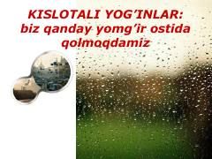

KYKislotali yomgʻirlarning kelib chiqishi, sabablari va atrof-muhitga taʼsiri haqida maʼlumotnoma.
Ushbu kitob kislotali yomgʻirlarning kelib chiqish tarixi, ularning tabiat va iqtisodiyotga yetkazadigan zararlari haqida maʼlumot beradi. Unda atmosferaning ifloslanish sabablari, xalqaro konvensiyalar va atrof-muhitni muhofaza qilish masalalari tahlil qilinadi.